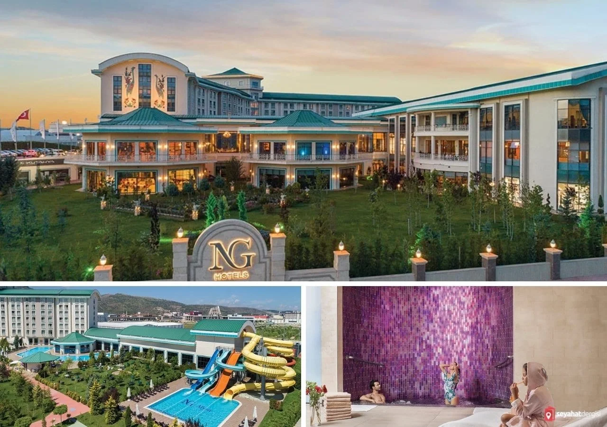
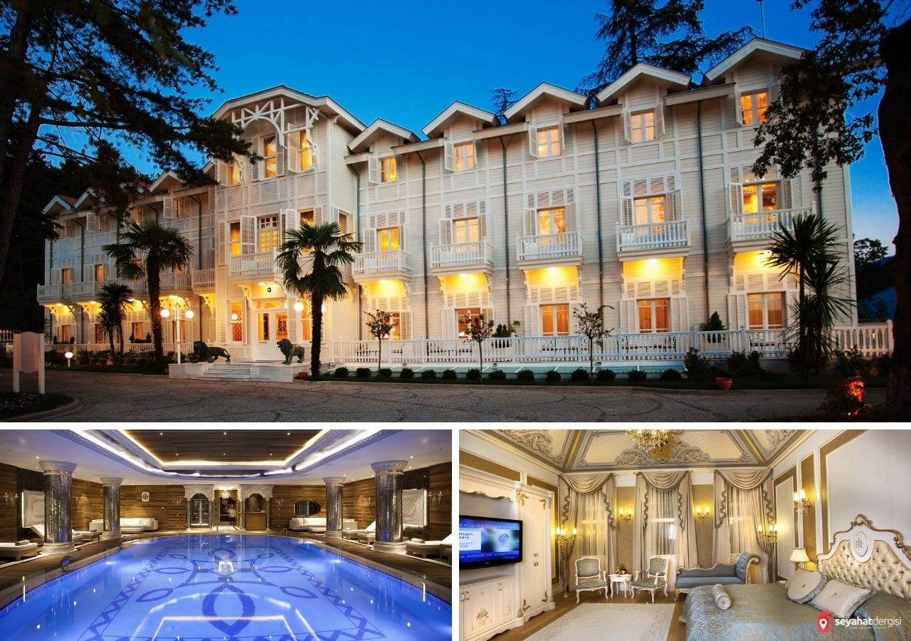
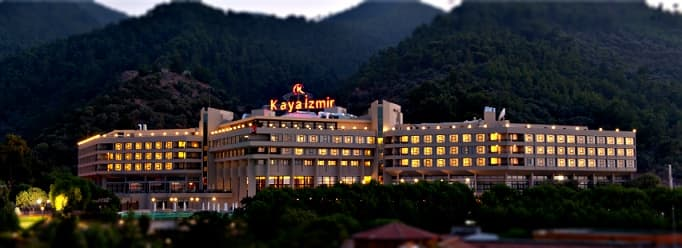
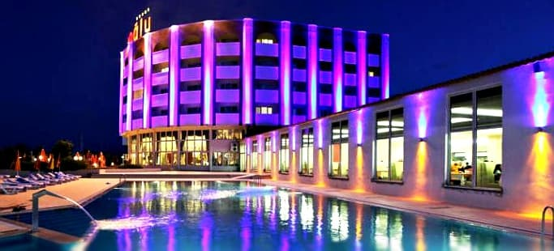
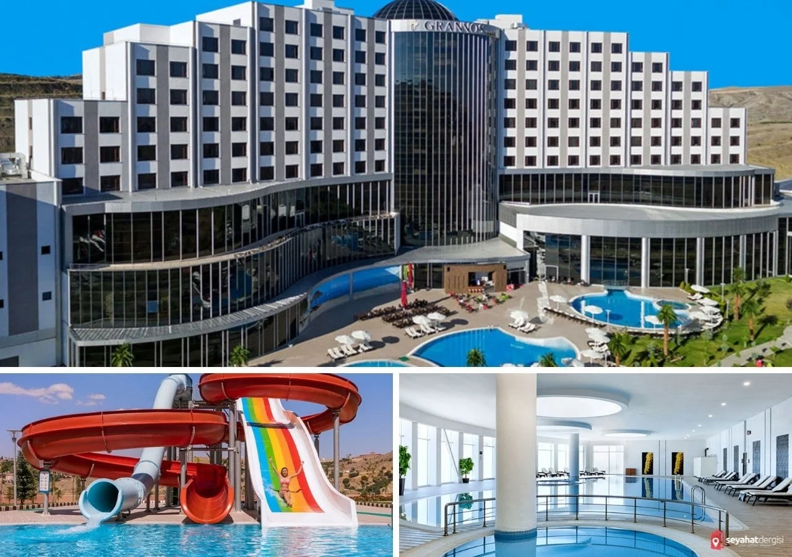
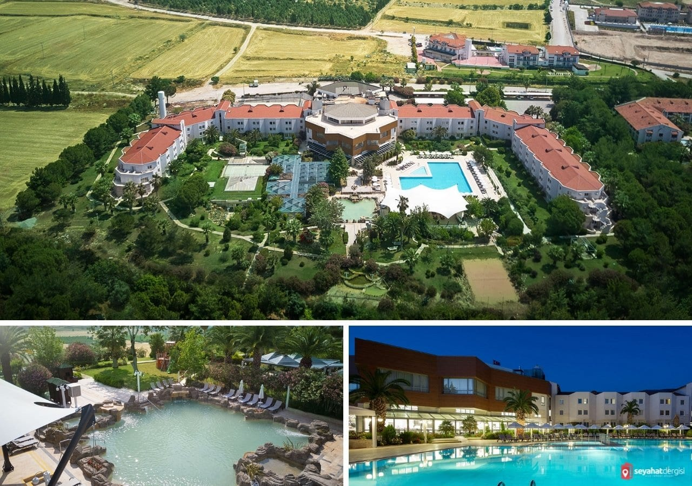
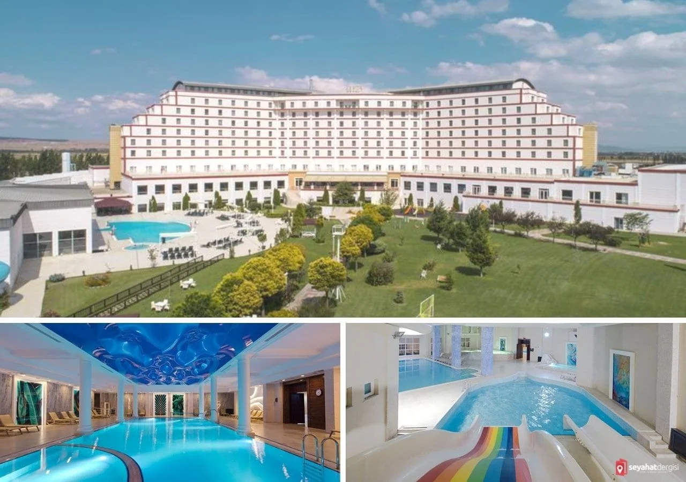
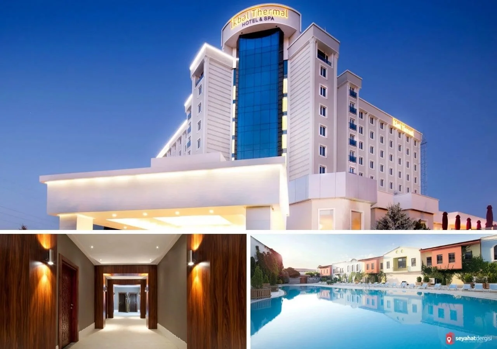
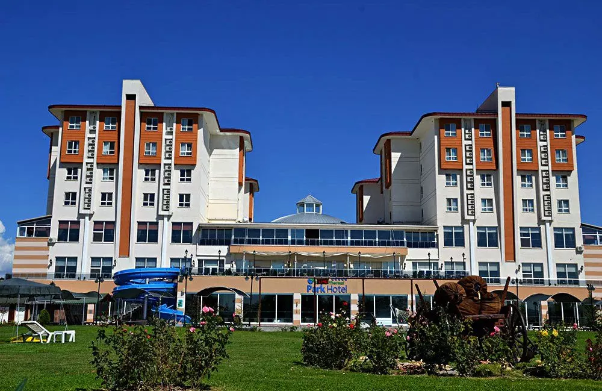

TÜRKİYENİN EN İYİ TERMAL OTELLERİ
Termal kaynakları, Avrupa’da ve Dünya’da en iyi sıralarda olan ülkemiz, her yıl pek çok yerli yabancı turisti buralarda bulunan tesislerde ağırlıyor. Yazımızda sizlere ülkemizde yer alan en iyi termal otelleri, bölgeleri ve tesisleri tanıtıyoruz.
Tıbbi ilaçlardan fayda bulamayan binlerce insan şifayı doğal yollardan aramakta. Eski çağlarda baş ağrısı, kas ağrısı, psikolojik hastalıklar daha azken; yaşam stresinin artmasıyla çekilen hastalık düzeyi de oldukça artış gösterdi. Bu tür stres kaynaklı ağrı ve hastalıkların da çözümü insanlar doğal yollarda arıyorlar.
Daha mental, stresi atabileceğiniz doğal yollar da çözüm çok daha efektif oluyor.Bu çözümlerden birisi termal tesislerdir. Ülkemiz termal tesis açısından çok zengin bir coğrafyadadır.En iyi termal oteller listesi ile onlarca şehrimizde bu mucizevi doğal alanları bulmak mümkün. Yatırımcılarda bu alanlara Türkiye’nin en iyi termal otellerini kurmuşlar.Dünyanın dört bir yanından ülkemize termal oteller için gelen turistler var. Neredeyse her ilimizde de kendi çapında müşteri kitlesi olan termal otellerimiz var. Özellikle Bursa, İzmir, Afyon, Balıkesir illerimiz bu işin merkezi. Hem lüks otelleri hem de sularının şifalarıyla.
NG Güral Afyon Termal Hotel – Afyon
Afyon termal oteller arasında en iyi otellerden birisi olarak hizmet veren NG Güral Afyon Termal Hotel, sunduğu hizmet ve imkanlar çok iyi bir tesis. Sadece Afyon olarak değil, ülkemizinde en iyi termal otelleri arasında ilk sıralarda yer alıyor.NG Güral Afyon, oldukça güzel ve şık bir mimari yapıya sahip. Şehrin diğer ünlü otellerine göre daha yakın bir zamanda yapılmış olması, onu bir adım daha öne çıkartmış.
Otele ilk girdiğiniz andan itibaren lüks bir deneyim yaşayacağınızı hissediyorsunuz.Havuzları, odaları ve lobi gibi alanlarında ferah ve lüks bir ambiyans sunuyor. Otelin pek çok noktasında fotoğraf çekilebileceğiniz harika alanlar mevcut.
Afyon Termal Otel Tanıtım Videosu
Otel dört mevsim hizmet veriyor. Yaz aylarında da kış aylarındada oteli tercih edebilirsiniz. Bir termal oteli neden yaz ayında tercih etmeliyim diye sorabilirsiniz. Yaz aylarında bölgesinde yer alan en lüks tesislerden birisi. İlla deniz demiyorsanız, kaydıraklı açık havuzları ve diğer imkanları ile size beklediğinizi kesinlikle veren bir otel.
Otelin imkanlarına gelirsek, kapalı ve açık havuzları bulunuyor. Kapalı karışık havuzlarında kaydırak yer alıyor. Oldukça keyifli 3 farklı kaydırak yer alıyor. Ayrıca kapalı havuzları arasında çocuk havuzuda yer alıyor. Burada küçük bir kaydırak ile çocuklara göre bir alan yer alıyor. Karışık alanda ayrıca birde termal havuz yer alıyor.
Limak Thermal Boutique Otel – Yalova
En iyi termal oteller listemizde bir diğer otelimiz Limak Thermal Boutique Yalova’da ayrıca termal konusunda ön planda bir kentimiz. Özellikle Limak Thermal Boutique otel süit ve normal odalarıyla çok özel bir hizmet sunuyor müşterilerine. Onların da sloganları önderimiz M.Kemal. Atatürk’e açılışta hizmet verdikleri üzerine. Bu otelinde her odasında termal suya girebileceğiniz jakuziler yapılmış. Mükemmel bir rahatlığa otel odanızda kavuşmanız mümkün..
Limak Termal Otel Web Sitesi İçin Tıklayınız
Kaya Termal Otel – İzmir
Ülkemizde yer alan en iyi termal oteller arasında sonraki durağımız İzmir. Şehrin termal su Tesiste yer alan SPA alanları bay ve bayan ayrı şekilde hizmet veriyor. Erkek hamamı ve bayan hamamı olarak ayrı alanlar mevcut. Jakuzi bölümünde de yine bay bayan ayrı.
Spa alanında masaj salonu, oldukça şık bir yapıya sahip hamamlar, jakuzi ve fitness merkezi bulunuyor. Otelin açık ve kapalı yüzme havuzları mevcut. Açık sıcak havuzlarıda bulunuyor. Kış ayında dışarıda suya girseniz dahi üşümüyor sıcak suda rahatlık yaşıyorsunuz.
Otelde konaklama için sizlere farklı çeşitte modern ve lüks odalar sunuyorlar. Ağaçların arasında doğa ile iç içe, şifalı termal suları ile Kaya İzmir Termal Otel, en iyi termal oteller arasında yerini alıyor
Kaya Termal Otel Web Sitesi İçin Tıklayınız
Oruçoğlu Termal Otel – Afyon
Afyon’da Oruçoğlu Termal Otel ilk akla gelenlerden. Çünkü kendisi yeniliklerin öncüsü olarak biliniyor. Genelde oteller ortak havuzlarla termal hizmet sağlarken, Oruçoğlu yeni bir akım yaratmış bu suları tek tek odalara ulaştırmış. Bunu ilk yapan otel olarak, çok fazla tercih edilip zamanla 5 yıldız ayarına da ulaşmış mükemmel bir tesis. Otelin odalarına kadar termal su sunması oldukça iyi bir özellik. Otelin açık ve kapalı havuzları bulunuyor.
Açık alanda bulunan havuzlarda da sıcak termal bulunuyor. Termal suların şifası elbette önemli. Ancak biraz da eğlence olmalı diyorsanız, havuzlarında oldukça büyük bir kaydırak da var. Çocuklar için de bir havuz mevcut. Ayrıca çocuklar için oyun alanı ve park da yer alıyor. Bayan ve erkek ayrı termal havuzları bulunuyor. Ayrıca spa alanında da ayrı bölümler mevcut. Temiz odalara sahip, Afyon’un eski ve köklü otellerinden biri olanOruçoğlu Termal Resort Otel, en iyi termal oteller listemizde yer alıyor.
Oruçoğlu Termal Otel Web Sitesi İçin Tıklayınız
Grannos Thermal Hotel Ankara
Kapalı ve açık havuzları, aqua parkı ile termal oteller arasında önce çıkan Grannos Thermal Hotel, Ankara’da bulunyor. Bay ve bayan ayrı termal havuzları ve bayan ayrı hamamı bulunuyor. Erkeklere ayrı bir hamamı yok. Karma hamam var. Otelin hem açık havuzundan hemde kapalı havuzunda kaydıraklar mevcut. Özel aile banyoları ile jakuzili havuz, sauna, hamam gibi imkanlar sunuyor. Özel bir tatil arayanlar için aile banyoları öne çıkıyor.Çamur banyosu ile mineralli termal su kullanılarak doğal bir peeling etkisi ile hücre yenilenmesi sağlanıyor. Cilt bakımı içinde otelin ayrı bir hizmeti var. Uzmanlar tarafından hizmet veriliyor.
Çocuklu ailelerin için dışarıda oyun parkı, tenis, basketbol sahası gibi imkanlar bulunuyor. İçeride ise güzel bir oyun salonu, mini sineması ve güzel bir top havuzu ile oyun alanı mevcut. Sunduğu aktiviteler arasında ATV, bisiklet, mini golf sahası gibi hizmetler mevcut.
Grannos Termal Otel Web Sitesi İçin Tıklayınız
Richmond Pamukkale Thermal Otel – Denizli
Tüm havuz ve diğer alanlar bay ve bayan karma kullanımdadır. Açık ve kapalı termal havuzları var. Otelde termal havuzların dışında ayrıca bir de yüzme havuzu yer alıyor. Otel tam veya yarım pansiyon hizmet vermekte. Çocuklar içinde otelin içinde çocuk oyun alanı ve dışında ise park bulunuyor. Aktiviteler olarak otel zaman zaman canlı müzik de sunuyor. Tenis sahası, bahçede bisiklet turu, çocuk oyun alanı ve parkı gibi aktiviteler ve imkanlar mevcut.
SPA alanında hamam, sauna, masaj hizmeti ve fitness bölümü yer alıyor. Otel Denizli ilinin Pamukkale ilçesinde yer alıyor.
Richmond Pamukkale Termal Otel Web Sitesi İçin Tıklayınız
Korel Thermal Resort Otel – Afyon
Afyon’un en iyi otellerinden olan Korel Termal Oteli, kaliteli hizmeti ile ön plana çıkan otellerden.Tesisin kapalı havuzları, açık havuzları, aile havuzları bulunuyor.Sigortalılara da hizmet veren bir klinikleri bulunuyor ve burada ozon gibi bir çok tedavi uygulanabiliyor. Bay ve bayan ayrı havuzları bulunuyor. Tesisim kapalı ve açık havuzları var. Bayanlara özel olan bölümde yer alan havuzlarda kaydırak gibi imkanlar var. Büyük ve küçük 2 ayrı kaydırağı mevcut.
Afyon’da yer alan otellerde oluşan 5 çayı kültürü burada da mevcut. Bu vakitte çay, kahve ve yanında kurabiye gibi ikramlar bulunuyor.Otel yarım pansiyon konseptinde hizmet veriyor. Restoran ve kafelerinden istediğiniz zaman ücret ile hizmet alabiliyorsunuz. Afyon’da yer alan en iyi tesislerin başında gelen Korel Termal Otel, Ülkemizin de en iyi termal otelleri arasında.
Korel Termal Otel Web Sitesi İçin Tıklayınız
İkbal Thermal Otel – Afyon
Şehrin en önemli otellerinden birisi olan İkbal Termal otel, yakın zamanda yapılan yenileme çalışmalarıyla daha iyi bir duruma geldi. Otelin bay ve bayan ayrı termal havuzları ve karma havuzları bulunuyor. Su kaydırağıda normal havuzlarında bulunuyor. Açık ve kapalı termal havuzlarıda bulunuyor. Bayanlara dışarıda ayrı havuzu bulunmuyor.
Diğer otellerde olduğu gibi burada da yarım pansiyon hizmet var ancak çay saatinde kurabiye ve benzer ikramlar yapılıyor. Çocuklar için havuzlarda kaydırak, oyun salonu ve masa tenisi gibi alanlar mevcut. Odalarda su ısıtıcı ve günlük bitki çayı, siyah çay gibi poşet çaylar ücretsiz olarak sunuluyor. Hem bölgenin hemde ülkemizin en iyi termal tesislerinden birisi olarak İkbal Thermal Otel listemizde yer aldı.
İkbal Termal Otel Web Sitesi İçin Tıklayınız
Sandıklı Termal Park
Güzeldere Afyon termal oteller bölgesi yakınlarında yer alan çamuru ile ünlü bir bölge olan Sandıklı, termal oteller içinde oldukça ünlü bir ilçe. Sandıklı Termal Park ilk girişte oldukça sıcak bir ortamda hissedeceğiniz bir lobi ile karşılaşıyorsunuz.Sıcak ikramların yapıldığı diğer lobi ise yine aynı sıcaklıkta dekore edilmiş. Otelin bay ve bayan ayrı havuzları bulunuyor.Karışık havuzda kaydıraklar mevcut.Ayrıca kaplıca havuzları ve diğer spa hizmetleri mevcut. Otel yemekleri afyon otelleri derecesinde olmasada Sandıklı Termal Park oteli fiyat performans için oldukça iyi bir seçenek.
Sandıklı Termal Park Otel Web Sitesi İçin Tıklayınız